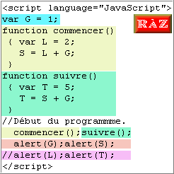

Il est pratique de déclarer des variables locales dans les fonctions.
Avantage : elles sont indépendantes. Inconvénient : elles sont invisibles dans les scripts.
Passez la souris sur le script dans l'ordre du programme. Passez sur "RàZ" pour
recommencer.

En suivant le chemin : "commencer()" > "suivre()" > "alert(G);alert(S)"
vous obtenez la bonne interprétation.